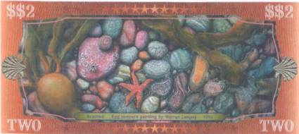
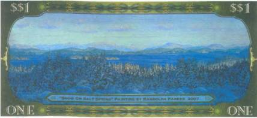
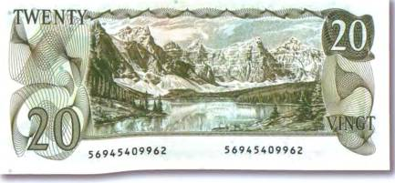
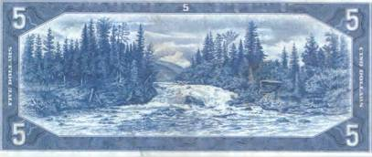
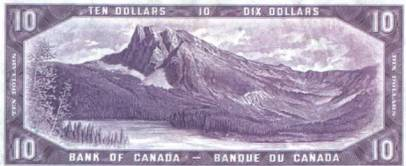
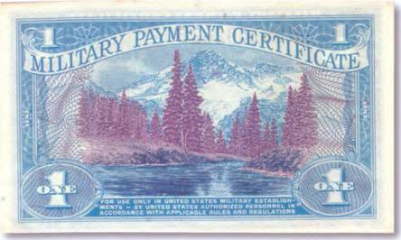

Тайны бумажных денег : Великолепие североамериканской природы

С момента открытия Нового Света «паломничество» людей туда уже не прекращалось. Сначала это были (вероятно) викинги, пытавшиеся наладить торговлю с североамериканскими индейцами, потом их сменили испанцы и португальцы, цели которых носили уже в основном захватнический характер. А сегодня Америку для себя открывают миллионы туристов со всего мира. Ведь в Америке есть на что посмотреть!
У северо-западного побережья Канады лежит живописный остров Солт-Спринг, омываемый водами Тихого океана. Площадь его составляет 180 км , и для любителей природы североамериканского континента это настоящая Мекка. Когда разговор заходит о красотах острова (американцы называют этот остров Сан-Хуан), они так и говорят «must see», что значит — «должен увидеть» (рис. 108).
От Ванкувера или Виктории до него можно добраться на пароме или водным самолетом. Солт-Спринг знаменит своими деревенскими ландшафтами, вкусным сыром местного производства, чистейшим воздухом и зачаровывающими закатами. Любителям искусства там тоже не придется скучать. На острове находятся по меньшей мере 40 картинных галерей и художественных мастерских. Говорят, что на Солт-Спринг царит лучший климат во всей Канаде. И в самом деле, даже зимой столбик термометра там редко опускается ниже нуля. А в жаркие летние часы с океана дует освежающий бриз (рис. 109).



Среди жителей острова немало деятелей науки и культуры, менеджеров и предпринимателей. Именно по инициативе общины на острове появилась собственная валюта. Кстати, представленные здесь банкноты острова являются самыми настоящими деньгами, которые при желании можно обменять на канадские доллары по курсу 1:1. До настоящего времени было выпущено уже несколько серий этих банкнот. Известны номиналы в 1, 2, 5, 10, 20, 50 и 100 долларов.
Изумительный по своей красоте пейзаж с видом Скалистых гор увековечен на купюре Канады в 20 долларов 1979 г. (рис. 110).
А у подножия гор — озерная гладь. В Канаде насчитывается свыше 4 млн. озер. Самые крупные из них — Большое Невольничье и Большое Медвежье. Благодаря чистоте воды, живописным берегам и удивительному климату озера Канады являются излюбленным местом отдыха канадцев и гостей этой северной страны. Как говорят сами канадцы: «Вода в наших озерах прозрачнее воздуха». Однако водоемы Канады скрывают от человека и немало интересного и даже загадочного. Как считают многие криптозоологи в мире и в чем совершенно уверены местные жители, в некоторых из них живут таинственные существа с горбатыми спинами, длинными шеями, небольшими головами и четырьмя плавниками либо лапами. Описание этих живых существ очень напоминает доисторических обитателей Земли — плезиозавров и ихтиозавров. К таким озерам относятся, например, Огопого — родина странного зверя, которого не раз наблюдали как отдыхающие, так и старожилы тех мест.
С горами Канады тоже связано множество легенд, поверий и сказаний. В отдаленных от человеческого жилья горных районах, где на сотни километров тянутся лесные массивы, будто бы обитают человекообразные существа под стать памирскому йети. Там же в горах сэром Саймоном Моррисом в конце 70-х гг. прошлого века было сделано и одно необычное палеонтологическое открытие. Проводя раскопки, он обнаружил в сланцевых породах отпечаток очень странного существа, длина тела которого не превышала 2 см. При этом глаза и рот у него отсутствовали. До сих пор ученые ломают головы — что же это за чудо? Впрочем, и название ему дали вполне подходящее — галлюцигения.

Красоты канадской природы можно наблюдать сразу на нескольких банкнотах страны. Живописные пейзажи присутствуют на бонах 1954 г. номиналами в 5 и 10 долларов (рис. 111, 112).

Особого внимания любителей активного отдыха (походы, рыбалка, охота) заслуживают и горные массивы Северной Америки. Это овеянные многочисленными легендами и сказаниями древних народов вершины Скалистых и Синих гор (Киттаттини). К сожалению, на официальных банкнотах США не найти уже ни рокочущих водопадов, ни заливных лугов, ни словно бы вынырнувших из далекого прошлого затопленных лесов южных штатов. И все же полюбоваться природой Соединенных Штатов Америки на деньгах можно. Один такой завораживающий вид горных хребтов североамериканского континента помещен на боне США специального выпуска 1968 г. (так называемая серия 661) номиналом в 1 доллар (рис. 113).
